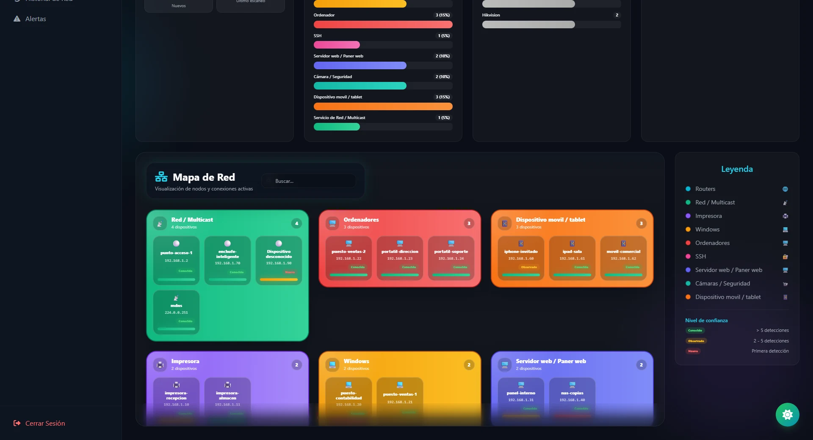

A scanner that doesn't disturb the network
The plan was a full scanner: a ping sweep and port probing with Scapy. That wasn't possible on the company network, so we had to scale it back to passive observation.
The result reads the machine's own ARP table and the connections that already exist, without sending packets to anyone. It finds fewer ports, but it can run on a real network without setting off anyone's alarms.
